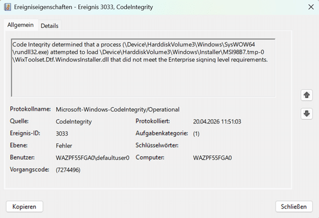
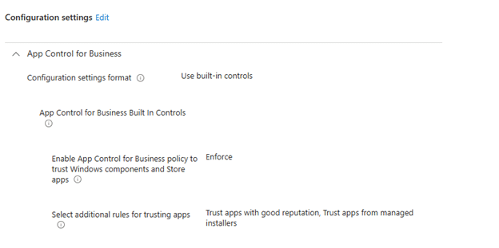
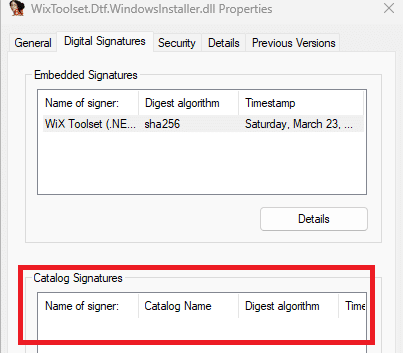

This blog looks at an Autopilot failure where the device gets stuck at Preparing your device for mobile management and ends with 0x800705b4. The root cause was not Autopilot itself, but App Control for Business blocking a new IME MSI custom action dependency during installation.
Introduction
The device went through the first parts of the Autopilot Enrollment just fine. Securing hardware completed. Joining the organization completed. Registering for mobile management completed. And then it stopped at the step I had already written about before: preparing your device for mobile management. In that earlier blog, which showed the exact same error, I looked at what happens during that “preparing” phase and why the Intune Management Extension is such an important part of that process. So when this device failed with 0x800705b4, that was the first place to look again.

The ESP screen only showed a timeout. That is what 0x800705b4 normally gives you: not much. The real question was what caused the IME to stop getting installed successfully.
Examining the IME LOGS for 0x800705b4
The first logical stop could be to look at the IME logging. That made sense, because during this part of Autopilot the device is waiting for the IME to install, initialize, and prepare itself before the rest of the device setup can continue. But… with the IME not even being installed… There were no IME logs… The interesting clue showed up somewhere else. The Code Integrity event log.
Code Integrity Event ID 3033
When reviewing the log files used by App Control for Business, we immediately noticed Event ID 3033.


It mentioned that Code Integrity blocked a DLL because it did not meet the Enterprise signing-level requirements. That immediately changed the direction of the investigation into the Autopilot error 0x800705b4. This was no longer just an Autopilot timeout. WDAC/App Control for business, or as it’s called these days, was getting involved.
One of the blocked files was loaded by the Intune Management Extension process itself. Another one was loaded during the MSI custom action flow from a temporary Windows Installer path. The file that made this story interesting was this one: WixToolset.Dtf.WindowsInstaller.dll. And it was being loaded from a temporary MSI extraction path under: C:\Windows\Installer\MSI*.tmp-
That installer path matters. The IME Installer also needs to execute the custom actions. During the MSI installation, it extracts the support files to run those custom actions. One of those support files was blocked before the custom action could continue. Autopilot/ESP was waiting for IME. IME was waiting on its MSI/custom action flow. WDAC blocked one of the DLLs in that flow. After waiting enough, ESP ended with 0x800705b4.(time-out)

The App Control setting that caused the: 0x800705b4
The device had an App Control for Business policy configured from Intune. The policy used the built-in controls.
The important setting was configured like this:


Enable App Control for Business policy to trust Windows components and Store apps = Enforce
The policy also had the additional trust options enabled:
At first glance, that sounds like it should be fine. The IME is Microsoft. The MSI is Microsoft. The custom action DLL is Microsoft-signed. So why would WDAC block anything in that flow?
Because WDAC does not simply say: the parent process is Microsoft, so everything it loads is fine. It evaluates the actual file being loaded. In this case, the blocked file was WixToolset.Dtf.WindowsInstaller.dll.
That DLL was signed, but it only showed the embedded WiX Toolset / .NET Foundation signature. The older Microsoft.Deployment.WindowsInstaller.dll also had an embedded WiX signature, but it was additionally covered by a Microsoft catalog signature from the IME package.


That catalog signature difference matters. The old dependency lined up with the Microsoft trust path expected by the policy. The new dependency did not, so Code Integrity blocked it and with it Autopilot was stuck on 0x800705b4 during enrollment.
Looking at the IME MSI
The next step was comparing IME MSI versions.

In 1.99.101.0, the custom action payload still contained the older DTF assembly: Microsoft.Deployment.WindowsInstaller.dll. In the newer IME versions I checked, starting with 1.101.103.0, that dependency changed to: WixToolset.Dtf.WindowsInstaller.dll
The same WixToolset.Dtf.WindowsInstaller.dll was also present in 1.101.105.0, 1.101.109.0, and 1.101.111.0. So, based on the versions I had, 1.101.103.0 was the first version in which this new WiX DTF DLL appeared.
The Custom action DLL itself
The next question was obvious. Did Microsoft move to WixToolset.Dtf.WindowsInstaller.dll because a new IME custom action needed it? Based on the binaries, that does not seem to be the case.
When comparing SideCarSetupCustomActions.dll between 1.99.101.0 and 1.101.103.0, the custom action entry points were essentially the same. The old version referenced Microsoft.Deployment.WindowsInstaller. The new version referenced WixToolset.Dtf.WindowsInstaller. Both still targeted .NET Framework 4.7.2.

That points more toward a WiX Toolset / DTF build-chain migration than a new IME feature requirement.
So what changed?
The most likely explanation is much simpler. The IME setup/custom-action project moved from the older WiX v3-era DTF assembly to the newer WiX Toolset DTF assembly.
That changed the dependency from: Microsoft.Deployment.WindowsInstaller.dll to: WixToolset.Dtf.WindowsInstaller.dll
From a build tooling point of view, that move makes sense. Newer WiX Toolset. Newer DTF package. Modern package-based dependency. Cleaner namespace. But from a WDAC perspective, it introduced a different signing chain. And that is where the issue starts.
Why did the IME not break before?
This is the part I had to double-check. The old Microsoft.Deployment.WindowsInstaller.dll was not simply “Microsoft signed” as an embedded signature. Its embedded signature was also from WiX Toolset / .NET Foundation. But Windows showed something extra for the old DLL: a Microsoft catalog signature.

So the old DLL had an embedded WiX signature, but it was also covered by a Microsoft catalog signature from the IME package. That catalog signature made the old dependency line up with the Microsoft trust path that WDAC expected.
The newer WixToolset.Dtf.WindowsInstaller.dll only showed the embedded WiX Toolset / .NET Foundation signature. It did NOT show the same Microsoft catalog signature.

That explains why the older dependency did not break in the same way, while the newer one did. The breaking change was not only the move from Microsoft.Deployment.WindowsInstaller.dll to WixToolset.Dtf.WindowsInstaller.dll. It was the move to a new DTF DLL that was no longer covered by the Microsoft catalog signature the old dependency had.
Why WDAC caused 0x800705b4
A normal signature check and a strict WDAC Enterprise signing level check are not the same thing. In this case, Code Integrity was not saying “this file has no signature.” It was saying the file did not meet the Enterprise signing level requirements.
That distinction matters. WixToolset.Dtf.WindowsInstaller.dll is signed, but with the WiX Toolset / .NET Foundation signing chain. With this App Control policy enforced, that was not enough. And because that DLL was needed during the IME MSI installation, blocking it broke the IME installation and preparation flow.
When that happens during Autopilot ESP, the device keeps waiting at Preparing your device for mobile management until it eventually fails with: 0x800705b4,

The temporary workaround to fix 0x800705b4
For now, the workaround was a folder path rule for: %WINDIR%\Installer\*. That allowed the temporary MSI custom action payload to load, including WixToolset.Dtf.WindowsInstaller.dll. After that, the IME custom action flow could continue, and Autopilot was no longer stuck at preparing your device for mobile management (0x800705b4). Is that a clean fix? No!
That path is used by Windows Installer, so allowing it broadly is not something I would want to keep as the final answer. A path rule trusts a location instead of trusting a signer, and that is not ideal when the whole point of WDAC is to control exactly what is allowed to run or load.
But in this case, the choice was simple. Keep WDAC strict and break IME during Autopilot, or allow the temporary installer path long enough to get devices through enrollment.
The real fix should not be a broad path rule. The cleaner fix needs to happen in the IME MSI installation flow. Either the dependency needs to be packaged and signed in a way that satisfies Microsoft Enterprise signing level WDAC policies, or the MSI needs to avoid introducing a dependency that is not covered by the required Microsoft trust path.
Update: Microsoft fixed the catalog trust in IME 1.103.101.0
Microsoft appears to have fixed the WDAC trust problem in Intune Management Extension 1.103.101.0.

The interesting part is how they fixed it. Microsoft did not replace or re-sign WixToolset.Dtf.WindowsInstaller.dll. The DLL in 1.103.101.0 is byte-for-byte identical to the one included with 1.101.111.0. It still has the embedded WiX Toolset and .NET Foundation signature. Instead, Microsoft updated IntuneWindowsAgent.cat. This Microsoft-signed catalog contains the Authenticode hashes of files that belong to the IME package.

In 1.101.111.0, the Authenticode hash of WixToolset.Dtf.WindowsInstaller.dll was missing from that catalog.

In 1.103.101.0, the exact hash is now included. This gives Code Integrity a Microsoft trust path for the DLL. When WDAC evaluates the WiX runtime extracted under C:\Windows\Installer\MSI*.tmp, it can match the DLL against IntuneWindowsAgent.cat and validate the Microsoft catalog signature instead of relying only on the embedded WiX Toolset signature.
So the fix was not changing the WiX DLL itself. The fix was Microsoft adding the missing custom action dependencies to its signed IME catalog. That closes the catalog trust gap that caused Code Integrity Event ID 3033 and prevented the IME installation from completing under a strict App Control policy. The broad %WINDIR%\Installer* workaround should therefore no longer be needed with IME 1.103.101.0, although this should be validated on a device using the same enforced WDAC policy before removing the rule everywhere.
Summary
The IME MSI custom action dependency changed from Microsoft.Deployment.WindowsInstaller.dll to WixToolset.Dtf.WindowsInstaller.dll. The older dependency had an embedded WiX signature, but was also covered by a Microsoft catalog signature. The newer dependency only showed the WiX Toolset / .NET Foundation signature and did not have that same Microsoft catalog signature.
With App Control for Business enforced, Code Integrity blocked the new DLL during the IME MSI installation. And when IME cannot finish preparing itself, Autopilot will fail with the classic 0x800705b4 timeout error.